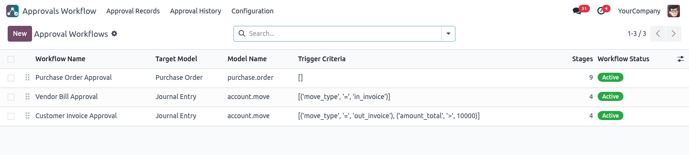
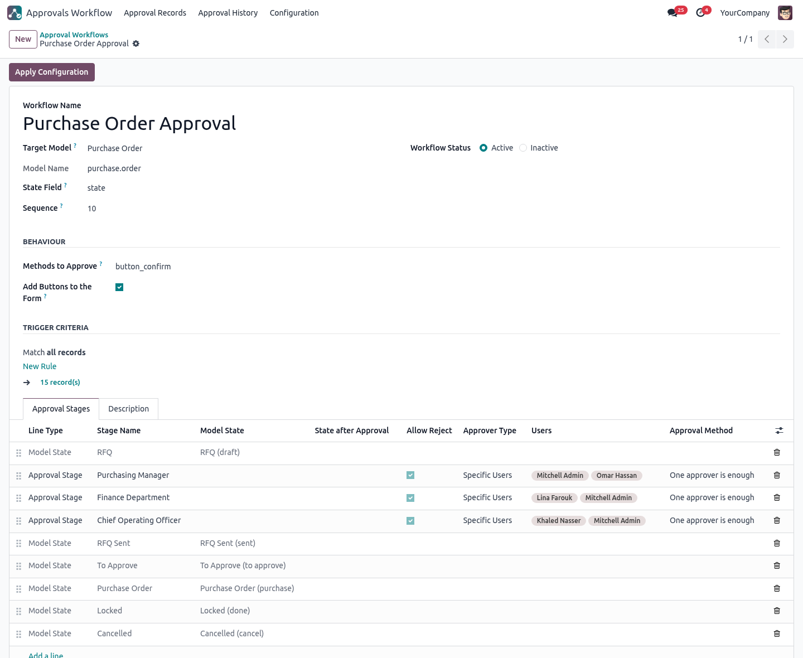
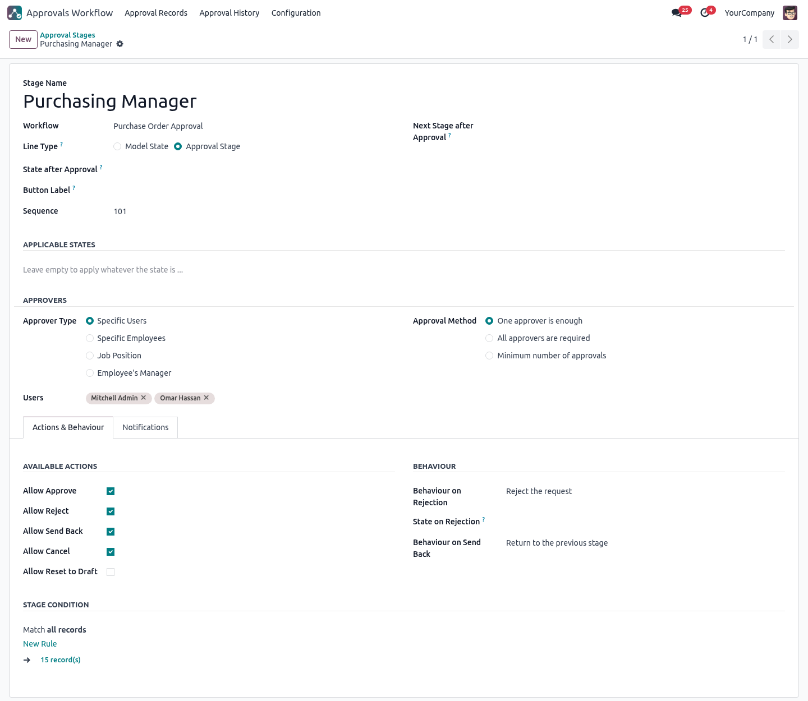
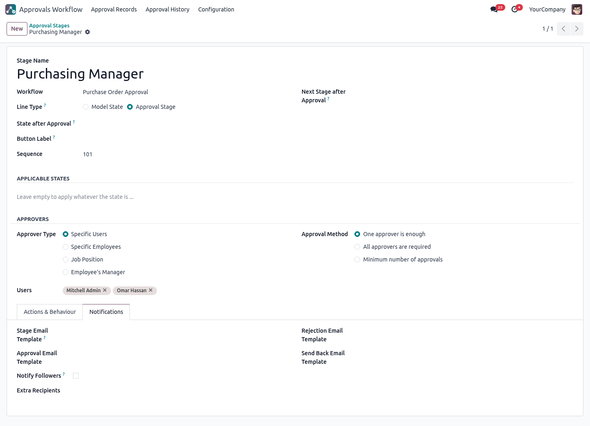
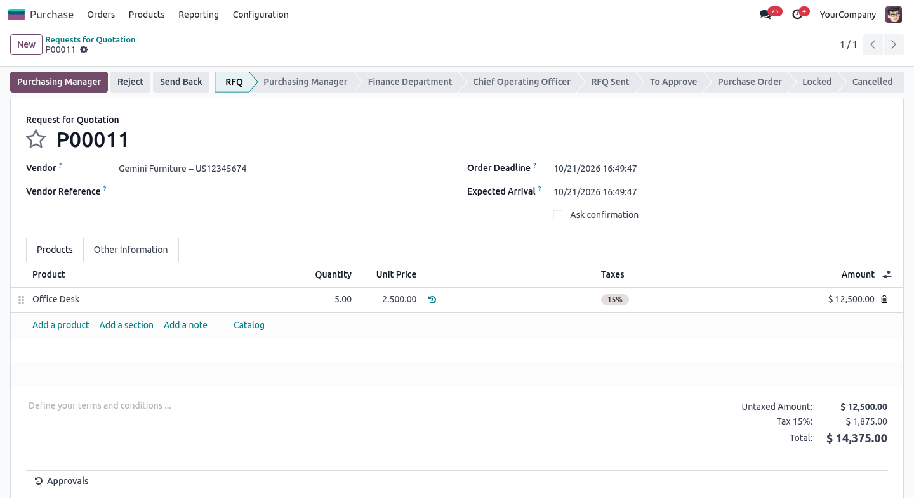
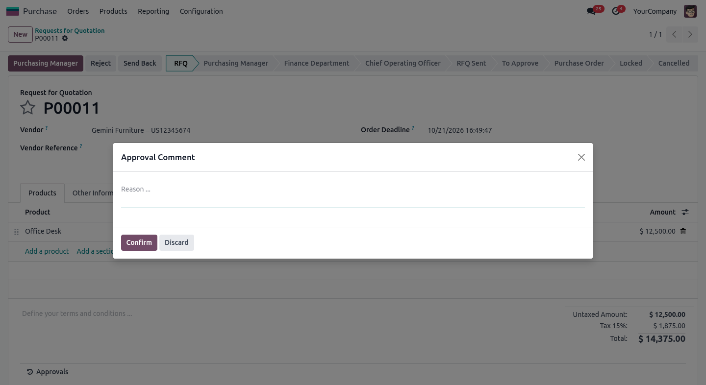
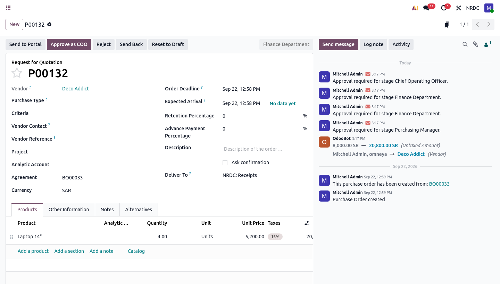
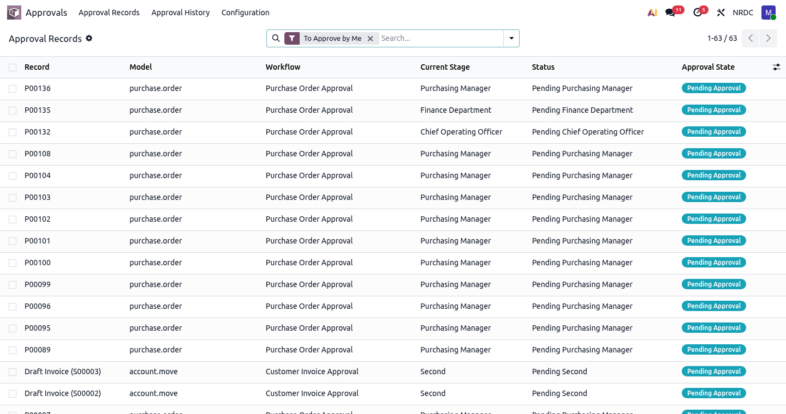
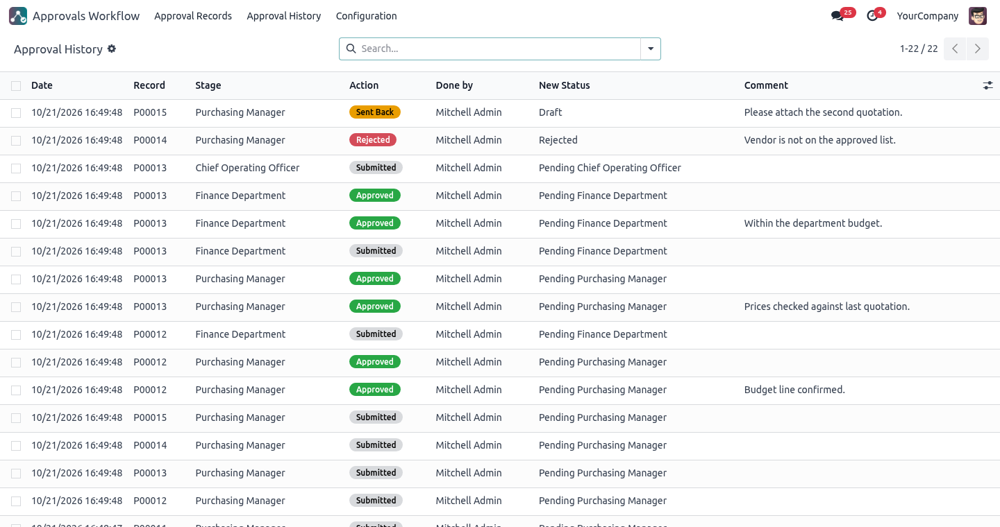

Add multi-stage approvals to any Odoo model - Purchase, Invoices, Requisitions, HR requests, Loans or your own custom models - configured from the screen, without writing code.
Stop building a new approval module for every document. Define who approves, in which order and what happens on rejection - once - and reuse it everywhere.
Pick the target model from a list. The approval buttons are added to its form automatically.
Add, remove and drag-and-drop stages at any time. Every rule is a setting, not code.
Who did what, when, at which stage and why - logged on every record.
amount > 10,000 or a specific journal / request type.button_confirm are refused until the record is fully approved.Choose the target model and, optionally, trigger criteria.
Set approvers, approval method, allowed actions and emails.
One click adds the buttons and status bar to the model's form.
Approvers act from the record; everything is logged.
Example: a 3-level approval on Purchase Orders (Purchasing Manager → Finance → COO).
Approvals › Configuration › Approval Workflows
All your workflows in one list: the target model, the trigger criteria, the number of stages and the status. Drag a line to change the priority.

button_confirm.
Choose who approves (users, employees, job position or manager), how many must approve, which actions are allowed and what happens on rejection or send back. A Stage Condition lets you skip the stage for records that do not need it.

Pick an email template for each event - stage reached, approved, rejected, sent back - notify the record's followers and add extra recipients. Without a template, approvers get a chatter notification.

The approver sees a button named after the current stage (Purchasing Manager) plus Reject, Send Back and Reset to Draft. The status bar shows the approval stages next to the native states. Other users do not see the buttons.

Rejecting or sending back opens a short dialog to enter the reason. It is saved in the history and sent in the notification.

Once a stage is approved, the record goes to the next one and its approvers are notified. You can give each stage a custom button label (here Approve as COO).

Approvals › Approval Records lists every document waiting for you, across all models, with its current stage and status.

Approvals › Approval History records every action: date, document, stage, action, user, new status and comment. Ideal for internal audit.

| Setting | Available options |
|---|---|
| Approver Type | Specific Users · Specific Employees · Job Position · Employee's Manager (level 1 = direct manager, 2 = manager's manager...) |
| Approval Method | One approver is enough · All approvers are required · Minimum number of approvals |
| Available Actions | Approve · Reject · Send Back · Cancel · Reset to Draft (each can be turned on/off per stage) |
| On Rejection | Reject the request · Return to Draft · Return to the previous stage · Return to a specific stage |
| On Send Back | Return to the previous stage · Return to Draft · Return to a specific stage |
| Emails | Stage template · Approval template · Rejection template · Send Back template · Notify followers · Extra recipients |
| Security groups | Approval User - acts on assigned approvals and reads the history · Approval Administrator - configures workflows and stages |
No code is needed. For deeper integration, inherit the mixin and use the hooks.
1. Add the approval fields to your model
class PurchaseOrder(models.Model):
_name = 'purchase.order'
_inherit = ['purchase.order', 'approval.mixin']
2. Run your logic when approved / rejected
def _on_approval_done(self):
return self.button_confirm()
def _on_approval_rejected(self):
return self.button_cancel()
Any non-transient model, standard or custom: Purchase Orders, Invoices & Bills, Purchase Requisitions, Employee Requests, Loans, and more.
Yes. Use trigger criteria and sequence: the first active workflow that matches the record is applied (e.g. one for invoices, another for bills).
They keep their current stage. The new configuration applies to the next steps they go through.
No. It only depends on base, mail and hr, so it works on Community and Enterprise.
Need help or a customization? Contact us through the Odoo Apps store.